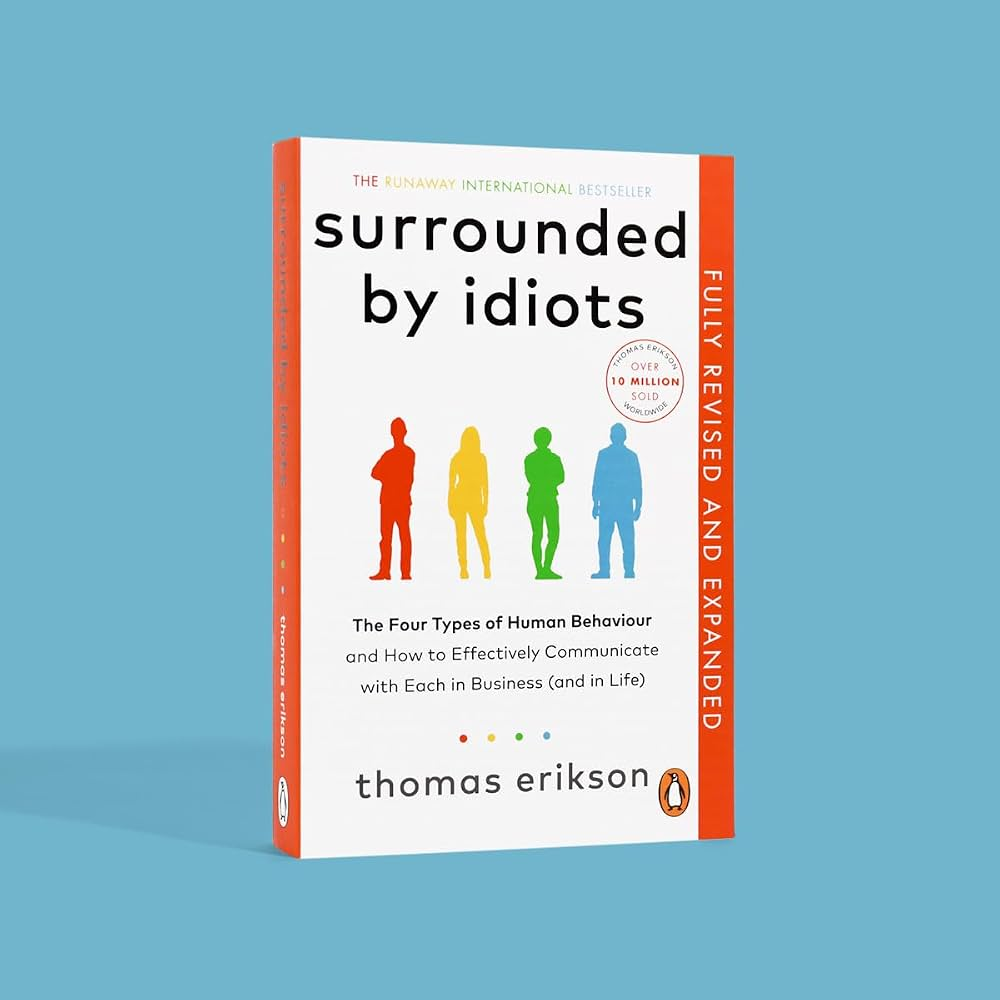

The Four Types of Human Behaviour and How to Effectively Communicate with Each in Business (and in Life)
Surrounded by Idiots by Thomas Erikson sorts behaviour into four colours: Red (dominant, results-focused), Yellow (outgoing, enthusiastic), Green (steady, harmony-seeking) and Blue (analytical, detail-oriented). The pitch in the title is that the people we label as idiots are usually just different from us, and that learning to recognise the difference makes communication easier.
Per published chapter summaries, the book first sets out how communication works and where behaviour comes from, then introduces the four colours one by one, and then spends most of its length on application: body language, adapting your style, delivering bad news, who gets along with whom, written communication, anger and stress. It finishes with a short history of four-type ideas, interviews, a self-test and a final team example.
My reading of the situation, as a reviewer who has not done a close reading: the practical advice (notice how the other person likes to receive information, then adjust) is sensible, and does not depend on the colour model being scientifically valid. The model itself is the weak part. Typing people into four boxes is popular, but the evidence behind DISC-style tests is thin, and I flag that throughout.
The model is the heart of the book. Each colour gets the same treatment: what it is, how it tends to communicate, what to do when you are talking to it, and where it goes wrong. The structure follows published summaries; where I add detail it is general DISC-style description, and the scenarios are my own illustrations, not quotations. These are generalisations. Real people do not sort this neatly (see the evidence note on the Ratings tab).
The Red type is the outgoing, task-focused corner of the model. Reds are shown as decisive and competitive, with a preference for directness and quick results. The book's advice for dealing with them is to communicate directly.
The outgoing, people-focused corner. Per the summaries, Yellows are optimistic and persuasive, and are engaged by ideas and social contact. They tend to bring energy to a room.
The reserved, people-focused corner. Summaries describe Greens as stable, patient and team-oriented, and say they need time to adjust to change.
The reserved, task-focused corner. Per summaries, Blues are analytical and detail-driven, and want arguments supported by facts and evidence.
| Red | Yellow | Green | Blue | |
|---|---|---|---|---|
| Energy | Outgoing | Outgoing | Reserved | Reserved |
| Focus | Task | People | People | Task |
| Style, in a word | Driven | Persuasive | Patient | Analytical |
| Wants from you | The point, quickly | Warmth and conversation | Time and calm | Facts and detail |
| Watch out for | Steamrolling | Loose follow-through | Silent disagreement | Analysis paralysis |
Two points to hold on to. First, the useful part of the book is the adapt your delivery habit: same message, different packaging. Second, the colour labels are a shorthand, not a measurement. Using them to understand a colleague is harmless; using them to hire, fire or label someone is where the weak evidence matters.
My own two-slider tool, not one from the book and not a validated assessment. Move each slider to where you think you naturally sit.
One piece of bad news, framed four ways. Tap a colour to see how the same message could be packaged. The wording is mine, as an illustration of the book's "adapt to the listener" idea.
Five invented snippets, written by me. Tap the colour each one sounds most like, then remember that real people rarely fit this neatly.
The book's main practical ideas gathered in one place, described from published summaries. The practice plan at the bottom is my own suggestion.
Notice whether someone is outgoing or reserved, and whether they care first about people or about the task. Summaries say most people are a blend of two colours, so treat the label as a starting guess.
The book ends with a self-assessment quiz (described in one summary as 23 questions). Treat the result as a conversation prompt, not a diagnosis. For the validity caveat, see the Ratings tab.
A sensible guardrail (my own, not the book's): use the colours to change your own behaviour, and avoid announcing someone else's colour to them. It is easy to turn a shorthand into a stereotype.
Red, Yellow, Green, Blue.
Communication happens on the listener's terms.
Adaptation.
Stress factors and energy thieves.
Paraphrases, not direct quotes.
Difficult people may just be different from you.
Change how you say it, not what you mean.
Most people are a mix of colours.
Under stress, a strength turns into a weakness.
| Category | Claude | Dan | Why Claude scored it that way |
|---|---|---|---|
| Ideas | 3.0 | 3.5 | "Adapt to the listener" is a sound, useful idea, but the four-colour model is a popularisation of an older DISC-style approach, not a new one. |
| Readability | 4.0 | 3.0 | Per summaries, short chapters in a logical order with examples, and a bestselling, accessible style. I have not read it myself. |
| Actionability | 3.5 | 3.0 | Easy to try tomorrow (change how you open a message), but advice such as "read someone's colour in a meeting" is shaky when the typing itself is unreliable. |
| Evidence | 1.5 | 3.5 | DISC-style typing has weak independent validity evidence, and critics say the book gives little support for its colour assignments or its claim that most people are blends. See the critiques below. |
| Category average | 3.0 | 3.25 | Claude's overall is 3.0, which is 0.51 below the Goodreads average of 3.51, so slightly more than the 0.5 threshold. The gap is mostly Evidence: I weight support for the claims as a quarter of the score, while many readers rate on how useful and easy the book felt. The practical categories (Readability 4.0, Actionability 3.5) are close to or above the reader average. Dan's overall of 3.5 sits 0.25 above his own category average of 3.25. Against Claude he scores Ideas 0.5 higher, Readability 1.0 lower, Actionability 0.5 lower and Evidence 2.0 higher; the Evidence gap is the largest, and he noted he has read conflicting things about the evidence. |
Categories are the same four used for every review: Ideas, Readability, Actionability, Evidence. Dan's overall and category scores will be added when he provides them.
What you may have missed: DISC-style typing has weak independent validation. Wikipedia's DISC article describes its scientific validity as not demonstrated and says psychologists question its predictive validity. It cites a Scandinavian Journal of Psychology study (Martinussen and colleagues, 2003) that found the dimensions were not psychometrically independent and that the data fit combinations of Big Five traits better than four separate types. A 2013 German study of the Persolog DISC tool, as reported there, largely met reliability standards but did not meet validity standards at all.
Reliability (getting similar answers when you retake a test) is reported as decent, so a quiz will often give you the same colour twice. That is not the same as the colour meaning anything. The most positive reliability figures I saw came from a publisher's own report, which deserves scepticism. I could not verify a "2020 meta-analysis" that some blog posts cite, so I have not used it.
Separately, the book's practical advice (adjust how you say things to how the listener likes to hear them) does not depend on the model being valid. That is why I score Ideas and Actionability higher than Evidence. Also, sources disagree on how many chapters the book has, so the chapter list here is unconfirmed.
Dan rates Surrounded by Idiots 3.5 out of 5. He scores the ideas 3.5, readability 3 (a number he confirmed, since he said only that it was harder to read than most), actionability 3 and evidence 3.5. He was hoping to like it a lot and it fell a bit flatter than expected; he wonders if he built it up too much in his head.
He sees the colours as a way to get a general idea of who you may be dealing with and to gauge people quickly, not a way to dig into someone's actual personality. He understands the model to be DISC, based on how a person presents themselves rather than on personality. His boss uses True Colors, which he understands to come from a Myers-Briggs-style personality test and also sorts people into four colours, and he prefers that one because it is more about personality than presentation in front of groups.
What he liked is that it helped him conceptualise who different people are, why they work the way they do and what helps them work better, and he found it a really good book for understanding what a whole team is made up of and how its members might work together. What he disliked is that it was harder going than most books because it kept piling on use cases: one or two would have made the point. On evidence, he has read conflicting things online, but the book presents itself as using science-based methods.
Written up from Dan's own words (12 Nov 2026). His view stands apart from the Claude and reader views above; the DISC critiques further up this tab are not part of his rating.
Change how you deliver the message to suit the person hearing it. You can take that advice without believing in four colours, and that is the part of the book that survives its weak evidence.